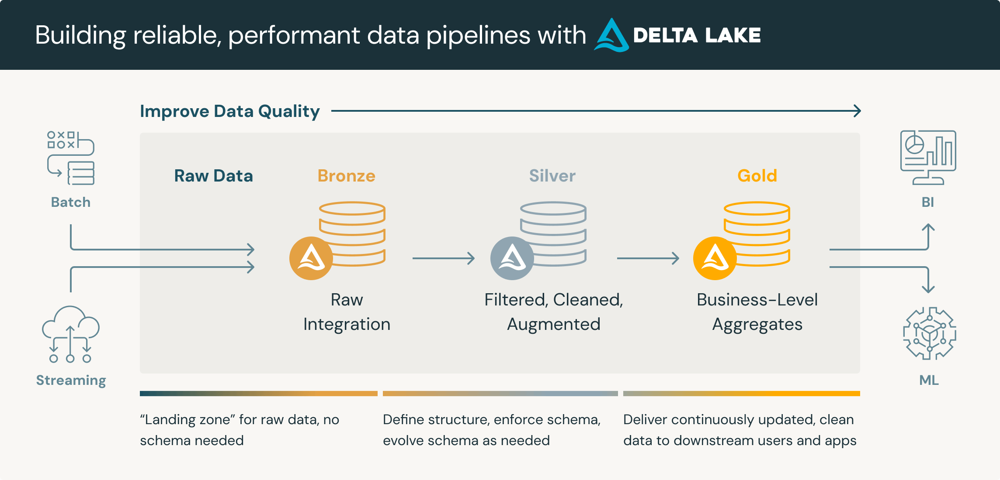
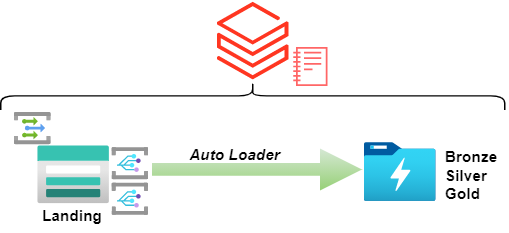
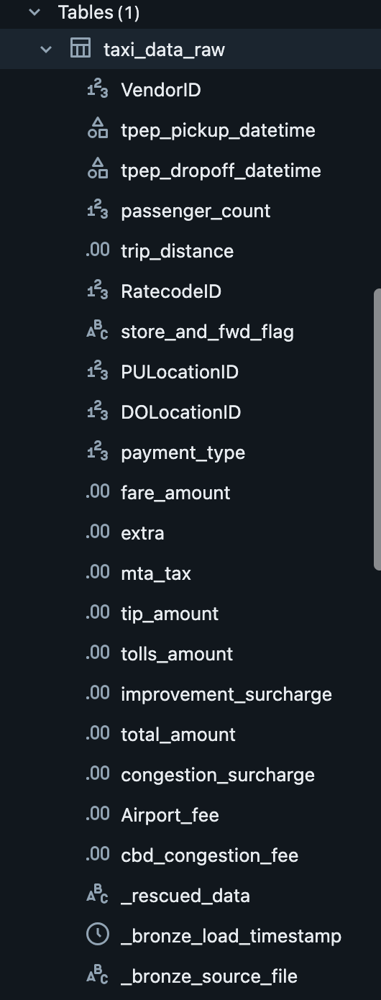
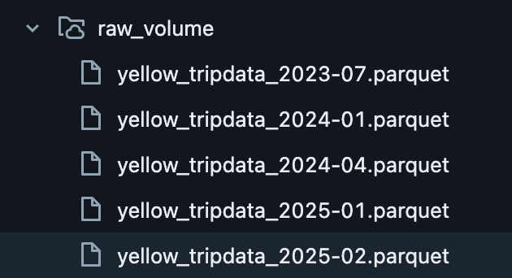
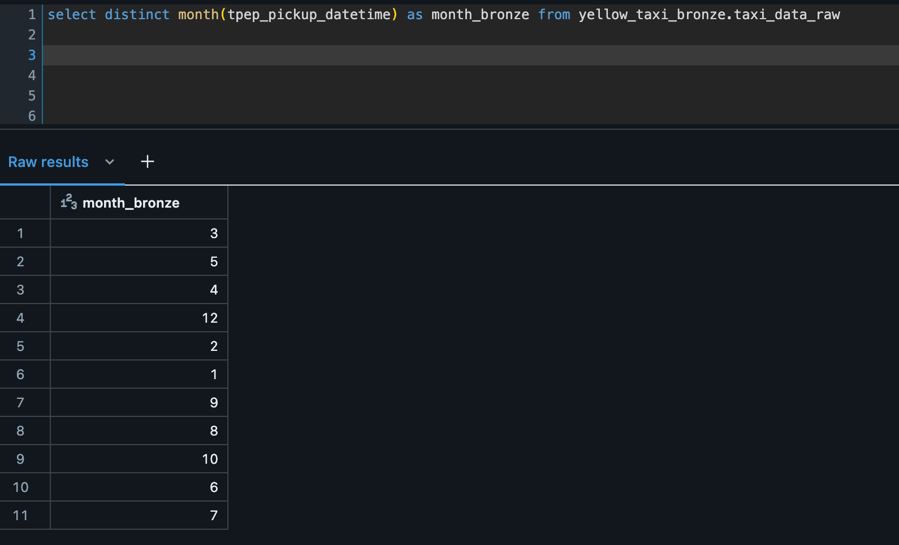
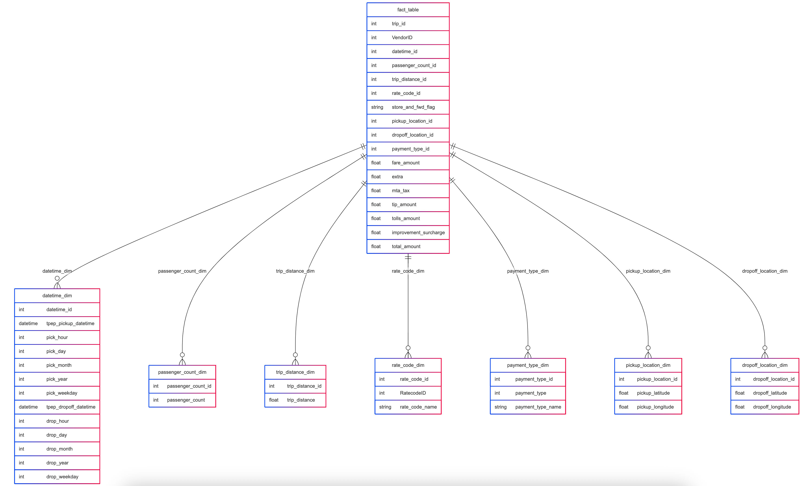
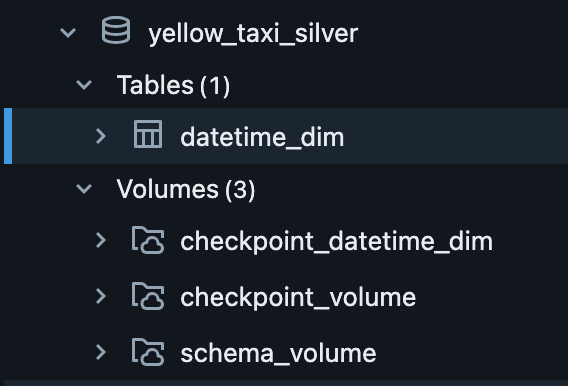

This is a data analysis project about New York Yellow taxi trips data that retrieves data from the following website, covering all extract, transform, and load (ETL) processes using Databricks as the main data engineering platform.
I decided to implement the medallion architecture

I decided to configure an autoloader to process the data as it arrives to the Databricks Volume

The first steps will be:
-
Scrape the download links
-
Store Them in a pandas dataframe
-
Convert the dataframe to CSV
import requests
from bs4 import BeautifulSoup
import re
import pandas as pd
url = "https://www.nyc.gov/site/tlc/about/tlc-trip-record-data.page"
response = requests.get(url)
links = []
if response.status_code == 200:
# Parse the HTML content
soup = BeautifulSoup(response.text, "html.parser")
# Find and print the title
title_tag = soup.find_all("a")
links.append('url')
for link in title_tag:
if re.search(r'yellow',link.get('href')):
links.append(link.get('href'))
df = pd.DataFrame(links)
df.to_csv('yellow.csv')
print(df)
else:
print(f"Request failed with status code: {response.status_code}")
Create the schema for bronze
%sql
CREATE SCHEMA IF NOT EXISTS yellow_taxi_bronze
COMMENT 'Schema for raw data ingestion (Bronze Layer)';
Create the volume for initial ingestion
%sql
CREATE VOLUME yellow_taxi_bronze.raw_volume;
Create the volume for the autoloader checkpoint
%sql
CREATE VOLUME yellow_taxi_bronze.checkpoint_volume;
Create our autoloader
(spark.readStream
.format("cloudFiles")
.option("cloudFiles.format", "parquet")
.option("cloudFiles.schemaLocation", schema_path)
.option("cloudFiles.inferColumnTypes", "true")
.load(volume_path)
.withColumn("_bronze_load_timestamp", current_timestamp())
.withColumn("_bronze_source_file", col("_metadata.file_path"))
.writeStream
.option("checkpointLocation", checkpoint_path)
.option("mergeSchema", "true")
.trigger(availableNow=True)
.toTable(bronze_table_name)
)
Have the table already created with the schema inferred

Loaded some parquets into the volume

Getting data ingested already

Applied dimensional modeling got this table structure

On the silver layer created the date dimension table
%sql
create volume yellow_taxi.datetime_dim
Created the checkpoint
%sql
create table yellow_taxi_silver.checkpoint_datetime_dim
Configured the autoloader for the date dimension tables
from pyspark.sql.functions import hour, dayofmonth, month, year, dayofweek, monotonically_increasing_id, col
bronze_table = "yellow_taxi_bronze.taxi_data_raw"
silver_datetime_table = "yellow_taxi_silver.datetime_dim"
checkpoint_path_silver_datetime = "/yellow_taxi_silver/checkpoint_datetime_dim"
bronze_df_stream = spark.readStream.table(bronze_table)
datetime_dim_stream = bronze_df_stream.select(
col("tpep_pickup_datetime"),
hour(col("tpep_pickup_datetime")).alias("pick_hour"),
dayofmonth(col("tpep_pickup_datetime")).alias("pick_day"),
month(col("tpep_pickup_datetime")).alias("pick_month"),
year(col("tpep_pickup_datetime")).alias("pick_year"),
dayofweek(col("tpep_pickup_datetime")).alias("pick_weekday"),
col("tpep_dropoff_datetime"),
hour(col("tpep_dropoff_datetime")).alias("drop_hour"),
dayofmonth(col("tpep_dropoff_datetime")).alias("drop_day"),
month(col("tpep_dropoff_datetime")).alias("drop_month"),
year(col("tpep_dropoff_datetime")).alias("drop_year"),
dayofweek(col("tpep_dropoff_datetime")).alias("drop_weekday"),
monotonically_increasing_id().alias("datetime_id")
).select(
"datetime_id",
"tpep_pickup_datetime",
"pick_hour",
"pick_day",
"pick_month",
"pick_year",
"pick_weekday",
"tpep_dropoff_datetime",
"drop_hour",
"drop_day",
"drop_month",
"drop_year",
"drop_weekday"
)
(datetime_dim_stream.writeStream
.outputMode("append")
.format("delta")
.option("checkpointLocation", checkpoint_path_silver_datetime)
.trigger(availableNow=True)
.toTable(silver_datetime_table)
)
Having the date dimension table with its volumes

Now let's apply the same transformation for the rest of dimensions
Passenger count dimension
%python
from pyspark.sql.functions import col, expr, hash
bronze_table = "cloudbricks_ai.yellow_taxi_bronze.taxi_data_raw"
silver_passenger_count_table = "cloudbricks_ai.yellow_taxi_silver.passenger_count_dim"
silver_trip_distance_table = "cloudbricks_ai.yellow_taxi_silver.trip_distance_dim"
checkpoint_path_passenger_count = "/Volumes/cloudbricks_ai/yellow_taxi_silver/checkpoint_passenger_count_dim"
checkpoint_path_trip_distance = "/Volumes/cloudbricks_ai/yellow_taxi_silver/checkpoint_trip_distance_dim"
bronze_df_stream = spark.readStream.table(bronze_table)
passenger_count_dim_stream = bronze_df_stream.select("passenger_count").distinct()
passenger_count_dim_stream = passenger_count_dim_stream.withColumn(
"passenger_count_id",
hash(col("passenger_count"))
)
display(passenger_count_dim_stream)
passenger_count_dim_stream = passenger_count_dim_stream.select("passenger_count_id", "passenger_count")
(passenger_count_dim_stream.writeStream
.outputMode("append")
.format("delta")
.option("checkpointLocation", checkpoint_path_passenger_count)
.trigger(availableNow=True)
.toTable(silver_passenger_count_table)
)
Trip distance
trip_distance_dim_stream = bronze_df_stream.select("trip_distance").distinct()
trip_distance_dim_stream = trip_distance_dim_stream.withColumn(
"trip_distance_id",
hash(col("trip_distance"))
)
trip_distance_dim_stream = trip_distance_dim_stream.select("trip_distance_id", "trip_distance")
(trip_distance_dim_stream.writeStream
.outputMode("append")
.format("delta")
.option("checkpointLocation", checkpoint_path_trip_distance)
.trigger(availableNow=True)
.toTable(silver_trip_distance_table)
)
Rate code dimension
%python
from pyspark.sql.functions import col, create_map, lit, concat_ws, expr
bronze_table = "cloudbricks_ai.yellow_taxi_bronze.taxi_data_raw"
silver_rate_code_table = "cloudbricks_ai.yellow_taxi_silver.rate_code_dim"
checkpoint_path_rate_code = "/Volumes/cloudbricks_ai/yellow_taxi_silver/checkpoint_rate_code_dim"
bronze_df_stream = spark.readStream.table(bronze_table)
rate_code_type_map = create_map(
lit(1), lit("Standard rate"),
lit(2), lit("JFK"),
lit(3), lit("Newark"),
lit(4), lit("Nassau or Westchester"),
lit(5), lit("Negotiated fare"),
lit(6), lit("Group ride")
)
rate_code_dim_stream = bronze_df_stream.select("RatecodeID").distinct()
rate_code_dim_stream = rate_code_dim_stream.withColumn(
"rate_code_id",
expr("try_cast(RatecodeID as BIGINT)")
)
rate_code_dim_stream = rate_code_dim_stream.withColumn("rate_code_name", rate_code_type_map[col("RatecodeID")])
rate_code_dim_stream = rate_code_dim_stream.select("rate_code_id", "RatecodeID", "rate_code_name")
(rate_code_dim_stream.writeStream
.outputMode("append")
.format("delta")
.option("checkpointLocation", checkpoint_path_rate_code)
.trigger(availableNow=True)
.toTable(silver_rate_code_table)
)